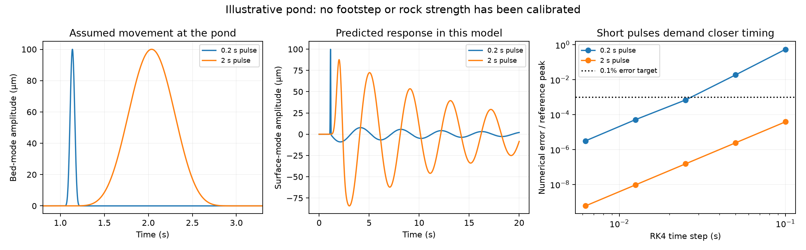
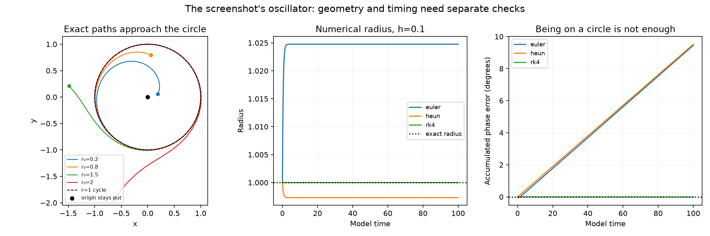
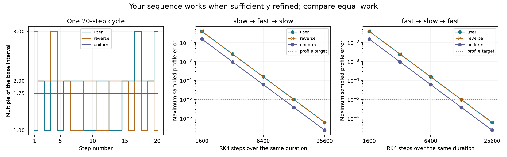
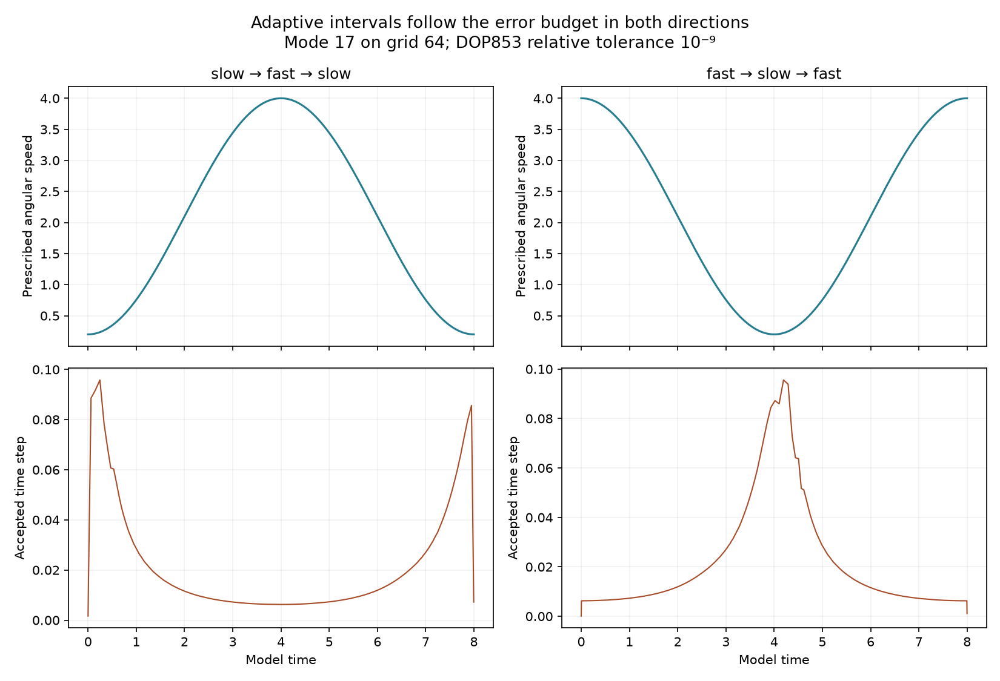
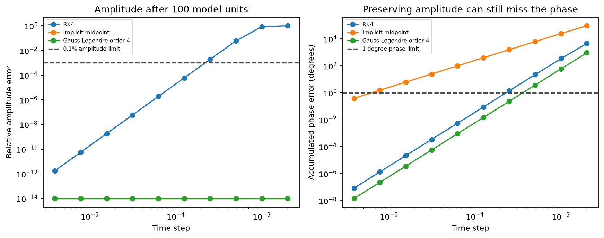
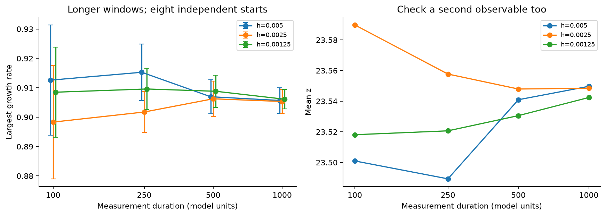
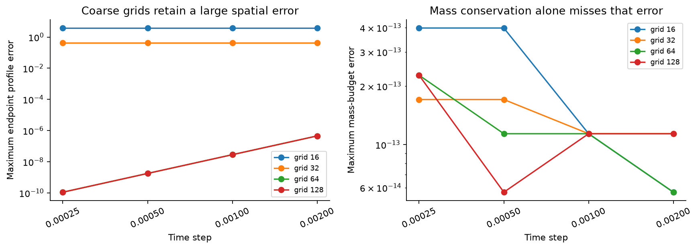
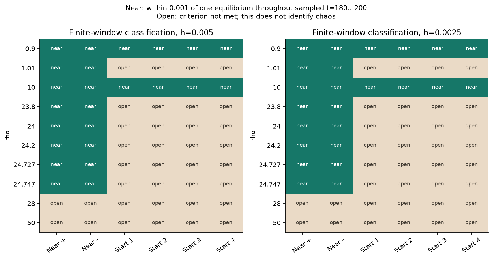
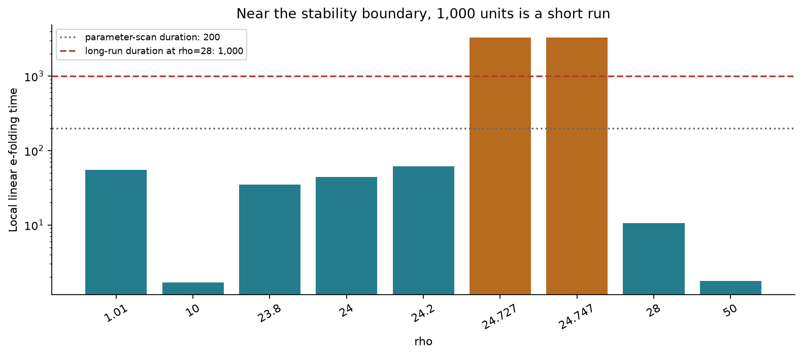
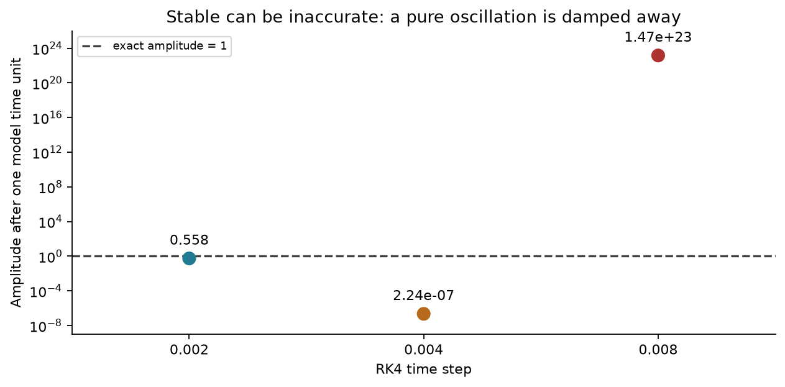

Stress duration is a convergence question
The expanded run took 8.50 minutes of computation. It tested 24 long Lorenz trajectories, 120 parameter-scan trajectories and 16 transport grid/time combinations. The computations expose failure modes that a short, smooth benchmark can miss.
Model-time units are dimensionless and are not seconds of a real apparatus. Original baseline report · Methods, plan and limits
Can footsteps move a pond and its tiny inhabitants?
There is a physical path: impacts load the ground; ground deformation can disturb a pond's bed or banks; water motion can carry suspended particles. Many particles may move because they share the same moving water. That does not establish biological sensing, damage, collective decision-making or a planetary effect. Counts of organisms and counts of vibration sources are different quantities.
The concert example is documented. Caltech and UCLA measured seismic motion associated with a crowd of more than 70,000 at a 2023 Taylor Swift show. Their study attributed the main signal to dancing and jumping. Caltech's account. PNSN explicitly says the Seattle concert did not cause or trigger an earthquake and cautions about assigning earthquake magnitudes to it. PNSN's analysis. These sources do not establish the claimed earthquake-alarm incident.
Timing affects how contributions combine. For an idealized linear case, assume 64 equal contributions at the pond, all at one frequency and with equal coupling to the same water mode. In phase, their amplitude is 64 times one contribution. Independent uniformly random phases give a root-mean-square combined amplitude of 8 times one contribution; evenly spaced phases cancel ideally. These are analytical superposition results, not a crowd simulation or measured footstep gains. Propagation delays, ground properties, source spacing and damping determine the actual combination. Globally scattered footsteps cannot simply be counted as one synchronized source.
Completed pond pilot: 20 time-step comparisons, one zero-motion control, 5/5 benchmark checks and 8/8 independent tests. The basin is assumed to be 2 m long and 0.1 m deep, with drag 0.15 s⁻¹. Its first shallow-water mode has predicted period 4.039 s. Bed movement amplitudes of 10 and 100 µm, lasting 0.2 or 2 s, are chosen numerical inputs. They are not estimates of a particular footstep, rock impact, crowd or surveyed pond.

At a fixed duration, ten times the bed movement produced ten times the response in this linear model. Duration changed the residual oscillation substantially: with a 100 µm bed pulse, the maximum surface-mode amplitude after the pulse was about 9.03 µm for 0.2 s and 84.23 µm for 2 s. The instantaneous peak while the bed was moving is a different metric, retained in the raw results.
| Pulse duration | RK4 step | Numerical error / reference peak | 0.1% surface target | Energy budget |
|---|---|---|---|---|
| 0.2 s | 0.1 s | 55.038% | FAIL | FAIL |
| 0.2 s | 0.025 s | 0.068787% | PASS | PASS |
| 2 s | 0.1 s | 0.0038697% | PASS | PASS |
| 2 s | 0.025 s | 1.508e-05% | PASS | PASS |
The 0.2 s pulse needed closer time resolution. At h=0.1 s, its sampled surface error was about 55%; at h=0.025 s it was about 0.069%. The 2 s pulse was already below 0.004% at h=0.1 s. Both amplitudes had essentially the same relative numerical error for a given pulse shape. Thus strength alone is not a time-step rule. The finest tested step, 0.00625 s, passed surface and energy budgets in all four input cases.
The equations are ηt+H ux=bt and ut+gηx=−d u, with b=B(t)cos(πx/L). A single analytical spatial mode gives η=A(t)cos(πx/L), u=U(t)sin(πx/L), A′=B′−HkU and U′=gkA−dU. No water crosses the idealized ends. Volume conservation follows from this mode's zero spatial mean; it is not a general spatial-grid validation.
Energy per unit width is E=ρL(gA²+HU²)/4. Bed work and drag dissipation are integrated separately and checked against the change in E. The independent reference integrates the analytic damped-wave response using 64-point Gauss quadrature; 32-point comparison and an independently stepped DOP853 solution agree within their declared tolerances. Input timing is resolved explicitly to avoid skipping the pulse.
Actual matching is still uncalibrated. It needs pond dimensions, source distance, soil/bank coupling, and a measured bed/bank displacement or velocity record with timing and uncertainty. Acceleration can help, but recovering displacement requires instrument correction and drift control. The SCEDC concert waveform archive is real external evidence, not a measurement at this pond, and has not been fed into this pilot.
The model omits local higher modes, horizontal bank motion, surface tension, vertical nonhydrostatic effects, wind, breaking, wetting/drying, soil elasticity and microbial response. Its spatial bed shape is a first-mode idealization, not a localized footprint. The shallow-water natural frequency differs from the corresponding finite-depth gravity-wave formula by about 0.41% for these assumed dimensions; smaller numerical steps do not remove that model discrepancy. No visible ripple, biological outcome or actual footstep strength is claimed. Deterministic inputs require no random seed; the random-phase comparison above is an analytical expectation, not sampled data.
Physical context: USGS on seismic excitation of water bodies and linear theory of waves from moving bottoms. Earthquake-scale evidence supports the coupling mechanism; it is not a calibration for footsteps.
20 numerical comparisons · Responses, budgets and provenance · Eight-test record · Assumptions and missing measurements · Reproducible model
New screenshot: a rotating, attracting circle
The supplied equations are θ′ = 1 and r′ = (1 − r²)r. Inside the unit circle, positive radius increases; outside it, radius decreases. At radius 1, the trajectory keeps rotating, completing one revolution every 2π model units. This is an attracting periodic orbit, also called a stable limit cycle. UCL's course notes give the same example.
Exception to the screenshot's wording: r₀=0 stays at the origin. The angle there is undefined as a Cartesian position. Thus “every radius approaches 1” must be restricted to r₀>0. The circle r=1 is invariant; points on it move rather than becoming equilibrium points.
θ(t) = θ₀ + t r(t) = r₀ / sqrt(r₀² + (1 − r₀²) exp(−2t)), t ≥ 0 x(t) = r(t) cos(θ₀+t), y(t) = r(t) sin(θ₀+t)
The implemented formula handles r₀=0 separately and otherwise works both inside and outside the circle. In the screenshot's separated integral, the real logarithm requires |1−r²| for r>1. The displayed intermediate expression with a positive exponential covers the inner branch; the final initial-value formula extends to all positive initial radii for forward time.
Completed 84 numerical comparisons, 9/9 benchmark checks, and 12/12 independent tests. Six initial radii, including the origin and points outside the circle, were advanced for 20 units with Euler, Heun and RK4 at four steps. Twelve additional unit-circle runs lasted 100 units to expose accumulated phase drift. The computational sweep, saved outputs and one selected repeat took 0.99 seconds; plotting and the independent suite are separate.

A close-looking circle can still have wrong timing. The table uses h=0.05 over 100 units, starting at radius 1. The radial-error budget is 0.1% of the exact unit radius and the phase budget is 1°.
| Method | Maximum radius error | Maximum accumulated phase error | Radius target | Phase target |
|---|---|---|---|---|
| euler | 1.24306% | 2.35459° | FAIL | FAIL |
| heun | 0.0649018% | 2.38555° | PASS | FAIL |
| rk4 | 1.98055e-05% | 0.000297109° | PASS | PASS |
Heun passes the radius target but fails the phase target. All 84 cases remained within the sampled radius guard of 3, including inaccurate settings. Boundedness is therefore not sufficient validation. RK4 recovered fourth-order convergence against the exact solution. One finest-step 100-unit RK4 trajectory repeated every state exactly in this environment; all 84 cases were not independently repeated.
This is a two-coordinate state-space model. The Cartesian equations are x′=(1−x²−y²)x−y and y′=x+(1−x²−y²)y. Their divergence is 2−4r², so they cannot be treated directly as an incompressible planar water velocity field. Radius is not conserved away from r=1; no artificial mass-conservation test is imposed. The study supplies a solver benchmark, not physical or biological measurements. Errors and boundedness are measured at saved steps, not proven between steps. Initial conditions are deterministic; no stochastic confidence intervals apply.
All 84 comparisons · Results and source hashes · Independent test record · Settings and criteria · Reproducible model
Your exact 1 → 2 pattern: tested
The supplied pairs 12 12 12 22 11 22 11 22 32 23 mean this repeated sequence:
1, 2, 1, 2, 1, 2, 2, 2, 1, 1, 2, 2, 1, 1, 2, 2, 3, 2, 2, 3
Each number multiplies a small base time interval. These are not literal intervals of 1, 2 and 3 model units. The 20-step cycle sums to 35 base intervals. We tested the pattern, its full reverse and a uniform interval of 1.75 base units, giving identical duration and calculation counts within each comparison.
Result: the pattern converges when refined, but in these two smooth flows uniform steps gave about 2.6 times smaller error at equal work. Reversing the pattern had very little effect. A repeating pattern does not respond to the current error or flow conditions, so it is different from automatic step selection.

Completed 42 comparisons, 26/26 benchmark checks and 11/11 new independent tests. The model comparisons, saved outputs and two selected repeats took 39.33 seconds; plotting and the independent test suite are additional. No new long-duration Lorenz or near-boundary run was performed.
| Flow speed order | Schedule | Maximum sampled profile error | Maximum phase error | All accuracy budgets |
|---|---|---|---|---|
| slow-fast-slow | user | 6.026e-07 | 3.452e-05° | PASS |
| slow-fast-slow | reverse | 6.026e-07 | 3.452e-05° | PASS |
| slow-fast-slow | uniform | 2.341e-07 | 1.341e-05° | PASS |
| fast-slow-fast | user | 6.025e-07 | 3.452e-05° | PASS |
| fast-slow-fast | reverse | 6.025e-07 | 3.452e-05° | PASS |
| fast-slow-fast | uniform | 2.341e-07 | 1.341e-05° | PASS |
This table uses 1,280 cycles, or 25,600 RK4 steps and 102,400 field evaluations per case, over eight model units. The base interval is 1/5600 ≈ 0.000178571, so pattern intervals are approximately 0.000178571, 0.000357143 and 0.000535714. The equal-work uniform interval is 0.0003125.
On grid 64, 80, 160, 320, 640 and 1,280 cycles were tested in both speed orders. Refinement recovered approximately fourth-order time convergence. The 640-cycle pattern already met the selected profile-error target, narrowly; 1,280 cycles provided more margin. At the finest level, grids 32 and 128 were also tested. Grid 128 agreed in accuracy with grid 64, while grid 32 retained aliasing error around 1.99 for all three schedules.
Accuracy, conservation and sampled boundedness remain separate. All cases passed the latter two checks, including inaccurate coarse cases. Budgets are unchanged: profile and amplitude error ≤10⁻⁵, accumulated phase error ≤0.01°, mass drift ≤10⁻¹⁰ and sampled fluctuation magnitude ≤2. These are pilot criteria, not universal standards. Every accepted time and diagnostic value is saved; spatial states are saved at cycle boundaries. Reported maxima are sampled, not rigorous continuous bounds.
Full repeat completed: 42 case files and 336 arrays compared in 41.11 seconds. Every saved numerical array matched exactly. This covers every saved time and diagnostic value, plus spatial states at cycle boundaries. Two selected cases also repeat every intermediate state. This is same-environment reproducibility; accuracy is assessed separately against the analytic solution. Full reproduction record.
This is the same exact-reference, mode-17 prescribed-advection model as the adaptive study below. Results are deterministic calculations, not observations of particles or bacteria. No random-seed uncertainty applies. They do not establish a universally optimal pattern, a physical speed-control mechanism or a new fluid law.
All 42 comparisons · Results and provenance · 11-test record · Exact sequence and plan · Reproducible model
New test: bigger and smaller intervals, in both orders
Calculation intervals can change as the motion changes. This benchmark tests slow → fast → slow and fast → slow → fast. A smaller time step means calculating more often; it does not slow the modeled water. The prescribed flow determines its speed.
Completed: 16 comparisons, 10/10 benchmark checks and 10/10 additional independent tests. The comparisons took 3.85 seconds on this machine, excluding plotting and the separate test suite. These are deterministic model results, not physical measurements.
| Flow speed order | Time-step order | Maximum sampled profile error | Accumulated phase error |
|---|---|---|---|
| slow-fast-slow | large-small-large | 0.000975041 | 0.054766° |
| slow-fast-slow | small-large-small | 0.0972495 | 5.1987° |
| fast-slow-fast | large-small-large | 0.0971791 | 5.1987° |
| fast-slow-fast | small-large-small | 0.000975024 | 0.054766° |
Both manual schedules use exactly 4,500 RK4 steps and 18,000 field evaluations over eight model units. The small interval is 0.001 and the large interval is 0.008; switches occur at t=2 and t=6. Putting small intervals in the fast portion reduced profile error by about 100-fold. Reversing the flow reversed which schedule worked better. Neither manual schedule met the strict 10⁻⁵ profile-error target; being better does not make it accurate enough.

Automatic selection: on grid 64, DOP853 at relative tolerance 10⁻⁹ used 690 accepted intervals in each flow profile, with worst sampled profile error 1.8e-08. The median interval was approximately 0.033–0.034 where speed was below 1, and 0.00665–0.00666 where speed exceeded 3. Grid 128 gave comparable accuracy. Different methods have different costs; these counts do not establish a universal speed advantage.
Aliasing remained: grid 32 retained error around 1.99, despite tighter tolerances and a passing mass budget. On resolved grids, tightening tolerance from 10⁻⁶ to 10⁻⁹ reduced error from about 2×10⁻⁵ to 1.8×10⁻⁸. The loose tolerance missed the chosen global accuracy target. All 16 cases passed the separate mass and finite sampled boundedness checks; only the four tight-tolerance, resolved-grid cases passed every accuracy budget.
The periodic model is qt + ω(t)qθ = 0, q(θ,0)=cos(17θ), with physical scalar m=60+q. The exact reference is cos(17[θ−∫ω dt]). Spatially uniform angular speed makes this prescribed ring flow incompressible. There is no diffusion, particle interaction, biological force, turbulence model or dynamically solved Navier–Stokes velocity.
The solver evolves q so a large mean cannot hide error under relative tolerance. SciPy documents DOP853 and its local error controls; solver completion alone is not a global accuracy guarantee. This study separately checks the analytic solution, mass and boundedness. Independent tests repeat both tight grid-64 adaptive integrations exactly in this environment. The full set of 16 cases was not independently repeated.
There is no universally best fixed number pattern. Define the numbers, their units, an error budget and a cost budget before comparing them. This run tested two manual schedules and error-controlled intervals; it did not optimize arbitrary sequences. Adaptive spatial refinement is a different extension and was not implemented. Adding grid points after discarding a mode cannot uniquely reconstruct the lost information.
Errors are sampled maxima: adaptive dense output every 0.005 model units; manual runs at every accepted step. They are not rigorous continuous bounds. The input is deterministic, so random seeds and statistical confidence intervals do not apply. Accuracy budgets: profile and amplitude errors ≤10⁻⁵; accumulated phase error ≤0.01°. Mass budget: 10⁻¹⁰. A sampled fluctuation bound of 2 is a guard, not proof of stability for all time.
All 16 comparisons · Results and source hashes · Independent test record · Settings and budgets · Reproducible model
What changed with the longer test?
- Eight independent starting states, each at steps 0.005, 0.0025 and 0.00125; 50 units of state transient followed by 1,000 units of measurement.
- At the finest step, the largest growth rate averaged 0.90611 per model unit, with an approximate 95% interval [0.90277, 0.90946].
- Spatial underresolution produced an endpoint error of about 3.80 on grid 16 and 0.434 on grid 32, despite mass-budget errors around 10⁻¹³. At the finest step, resolved grids reduced the profile error to about 1.11×10⁻¹⁰.
- Near the stability boundary, the eigenvalues predict a roughly 3,300-unit local e-folding time. The finite parameter scan does not establish long-term settling there.
Predeclared stopping criteria
These pilot tolerances were written before execution. They compare the two finest steps and the 500-unit and 1,000-unit duration prefixes. Passing supports these observables at rho=28; it does not settle every parameter value.
| Comparison | Absolute difference | Tolerance | Result |
|---|---|---|---|
| Rate stable across finest steps | 0.00077583 | 0.02 | PASS |
| Mean z stable across finest steps | 0.0060627 | 0.15 | PASS |
| Lobe occupancy stable across finest steps | 0.01445 | 0.04 | PASS |
| Rate stable from 500 to 1000 units | 0.0027016 | 0.015 | PASS |
| Mean z stable from 500 to 1000 units | 0.011835 | 0.15 | PASS |
Changed: accuracy now has its own acceptance rules
For the oscillation benchmark, a setting must satisfy 0.1% relative amplitude error, 1° accumulated phase error, numerical stability and at least eight output samples per true period. These are explicit pilot limits, not universal physical requirements. Phase is accumulated without wrapping away missed cycles.
The expanded analysis evaluated 144 method/step/duration combinations. 84 met all requirements; 60 were rejected. Four representative 40,000-step direct integrations independently agreed with the amplification-factor predictions. The 144-case sweep uses exact discrete-map analysis, not 144 separately time-stepped trajectories.
Why amplitude alone is insufficient: implicit midpoint preserves amplitude for this linear mode but at h=0.00025 accumulates about 158.42° of phase error over 10 units. Fourth-order Gauss–Legendre reduces that error to about 0.02335° at the same step and duration. Neither result justifies automatically replacing the solver in a different model.
| Method | Largest tested accepted step at T=100 | Amplitude error | Accumulated phase error |
|---|---|---|---|
| RK4 | 0.000125 | 0.0059866% | 0.087534° |
| Implicit midpoint | 3.90625e-06 | 0% | 0.38728° |
| Gauss–Legendre order 4 | 0.00025 | 0% | 0.23349° |
Zero amplitude error is the exact-arithmetic norm identity for these implicit methods on this constant-frequency linear mode; roundoff was measured separately. Implicit stages have a different cost from explicit RK4, so step counts alone do not establish speed. The exact-rotation oracle applies only to the analytically solvable mode.

All 144 accept/reject decisions · Accepted steps by duration · Direct integration audits · Accuracy plan
Duration and resolution

A conservation check can miss a wrong solution

120 finite-window trajectories

How long is long enough?

Accuracy requires more than avoiding blow-up

How long should the next stress run be?
For this rho=28 pilot: assess the comparisons above before extending duration. A longer run is useful when growth-rate or state statistics still drift; refining space or time is necessary when numerical error persists. Repeating an underresolved solution for longer does not repair it.
For parameters very close to a stability boundary: use the local timescale to design a separate run. Around rho_H ± 0.01, even five local e-folds require roughly 16,500 model units. Such a run was not completed here, and five e-folds would still not prove a global basin or bifurcation claim.
Wall-clock planning: this machine took 8.50 minutes for the bounded expansion and 0.63 additional minutes to repeat one selected finest-step trajectory. At fixed method, ensemble size and step, cost grows roughly with simulated duration. Doubling the number of starts or halving the step also roughly doubles integration work. These are planning estimates, not guarantees.
Failures and verification are retained
The first independent derivative check had residual 1.24e-07, marginally exceeding its 10⁻⁷ tolerance. Halving the derivative interval twice reduced the residual to 7.33e-09. The tolerance and simulated model were unchanged. The initial failure record and refinement diagnostic remain in the package.
The finest-step run for seed 101 was repeated: all sampled states, tangent-growth blocks and final spectrum matched exactly in the same environment. This is one reproduced extended trajectory, not a repeat of all 24. The earlier baseline's complete 40-file reproduction remains separately documented.
Every declared check · Long-run results · Duration prefixes · Parameter classifications · Selected repeat · Original plan
Reproduce
Use the pinned dependencies in the parent package. From that package directory:
python stress/run_stress.py python stress/oscillation_accuracy.py python stress/adaptive_transport.py python stress/sequence_transport.py python stress/limit_cycle.py python stress/pond_vibration.py python -m pytest stress/test_pond_vibration.py -q --junitxml=stress/data/pond-vibration/independent-tests.xml python -m pytest stress/test_limit_cycle.py -q --junitxml=stress/data/limit-cycle/independent-tests.xml python stress/verify_sequence_reproduction.py python -m pytest stress/test_sequence_transport.py -q --junitxml=stress/data/sequence/independent-tests.xml python -m pytest stress/test_adaptive_transport.py -q --junitxml=stress/data/adaptive/independent-tests.xml python -m pytest stress/test_stress.py stress/test_oscillation_accuracy.py -q --junitxml=stress/data/independent-tests.xml python stress/audit_stress.py python stress/make_stress_report.py python make_report.py python verify_package.py
If interrupted, use python stress/run_stress.py --resume. Only completed long-run checkpoints with identical model code and plan are reused. Cheap diagnostics run again. Preserve an earlier copy before regenerating outputs.